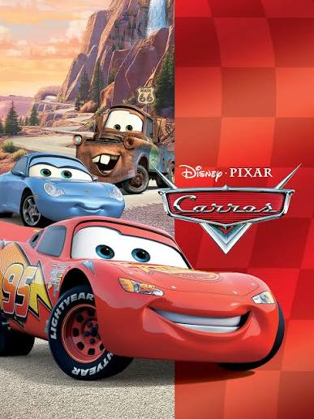

HOME
HOMEM-ARANHA 3
VINGADORES ULTIMATO

CARROS
PROJETO X
SOBRE
SOBRE O MUNDO DO CINEMA O Mundo do Cinema é um espaço criado para os apaixonados pela sétima arte, onde cada filme tem uma história que merece ser descoberta. Aqui você encontra curiosidades, detalhes, bastidores, informações sobre atores, diretores, personagens e produções que marcaram gerações. Explore histórias por trás das câmeras, descubra segredos de cenas famosas, conheça fatos surpreendentes e mergulhe no universo das grandes produções cinematográficas. Nosso objetivo é proporcionar uma experiência informativa e envolvente, mostrando que o cinema vai muito além do que vemos nas telas. Seja você fã de clássicos, grandes franquias ou lançamentos recentes, este é o lugar ideal para descobrir, aprender e se surpreender com tudo o que envolve o mundo dos filmes. Mundo do Cinema — Sua paixão por filmes, em cada detalhe.